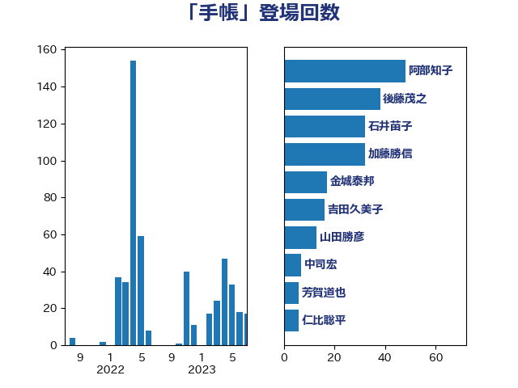

単語「手帳」

| 阿部知子 | 立憲民主党 | 48 回 |
| 後藤茂之 | 自由民主党 | 38 回 |
| 石井苗子 | 日本維新の会 | 32 回 |
| 加藤勝信 | 自由民主党 | 32 回 |
| 金城泰邦 | 公明党 | 17 回 |
| 吉田久美子 | 公明党 | 16 回 |
| 山田勝彦 | 立憲民主党 | 13 回 |
| 中司宏 | 日本維新の会 | 7 回 |
| 芳賀道也 | 国民民主党 | 6 回 |
| 仁比聡平 | 日本共産党 | 6 回 |
| 高橋千鶴子 | 日本共産党 | 5 回 |
| 田中健 | 国民民主党 | 5 回 |
| 熊谷裕人 | 立憲民主党 | 5 回 |
| 河野太郎 | 自由民主党 | 5 回 |
| 松川るい | 自由民主党 | 5 回 |
| 川田龍平 | 立憲民主党 | 5 回 |
| 天畠大輔 | れいわ新選組 | 5 回 |
| 塩田博昭 | 公明党 | 5 回 |
| 吉田はるみ | 立憲民主党 | 5 回 |
| 金村龍那 | 日本維新の会 | 4 回 |
| 仁木博文 | 無所属 | 4 回 |
| 西村智奈美 | 立憲民主党 | 3 回 |
| 畦元将吾 | 自由民主党 | 3 回 |
| 田村憲久 | 自由民主党 | 3 回 |
| 本田顕子 | 自由民主党 | 3 回 |
| 山下芳生 | 日本共産党 | 3 回 |
| 大島九州男 | れいわ新選組 | 3 回 |
| 堀場幸子 | 日本維新の会 | 3 回 |
| 國重徹 | 公明党 | 3 回 |
| 今井絵理子 | 自由民主党 | 3 回 |
| 井上哲士 | 日本共産党 | 3 回 |
| 高橋光男 | 公明党 | 2 回 |
| 高木かおり | 日本維新の会 | 2 回 |
| 音喜多駿 | 日本維新の会 | 2 回 |
| 鈴木義弘 | 国民民主党 | 2 回 |
| 葉梨康弘 | 自由民主党 | 2 回 |
| 秋野公造 | 公明党 | 2 回 |
| 石垣のりこ | 立憲民主党 | 2 回 |
| 田村智子 | 日本共産党 | 2 回 |
| 猪瀬直樹 | 日本維新の会 | 2 回 |
| 浜田聡 | NHK党 | 2 回 |
| 永岡桂子 | 自由民主党 | 2 回 |
| 早稲田ゆき | 立憲民主党 | 2 回 |
| 岡本あき子 | 立憲民主党 | 2 回 |
| 大石あきこ | れいわ新選組 | 2 回 |
| 古川禎久 | 自由民主党 | 2 回 |
| 勝目康 | 自由民主党 | 2 回 |
| 伊藤孝恵 | 国民民主党 | 2 回 |
| 中島克仁 | 立憲民主党 | 2 回 |
| 一谷勇一郎 | 日本維新の会 | 2 回 |
| 齋藤健 | 自由民主党 | 1 回 |
| 高木真理 | 立憲民主党 | 1 回 |
| 鈴木隼人 | 自由民主党 | 1 回 |
| 鈴木敦 | 国民民主党 | 1 回 |
| 窪田哲也 | 公明党 | 1 回 |
| 秋葉賢也 | 自由民主党 | 1 回 |
| 神谷政幸 | 自由民主党 | 1 回 |
| 田島麻衣子 | 立憲民主党 | 1 回 |
| 渡辺周 | 立憲民主党 | 1 回 |
| 浜口誠 | 国民民主党 | 1 回 |
| 池下卓 | 日本維新の会 | 1 回 |
| 杉尾秀哉 | 立憲民主党 | 1 回 |
| 日下正喜 | 公明党 | 1 回 |
| 新妻秀規 | 公明党 | 1 回 |
| 斉藤鉄夫 | 公明党 | 1 回 |
| 平木大作 | 公明党 | 1 回 |
| 岸真紀子 | 立憲民主党 | 1 回 |
| 山本太郎 | れいわ新選組 | 1 回 |
| 小野田紀美 | 自由民主党 | 1 回 |
| 小倉將信 | 自由民主党 | 1 回 |
| 宮本徹 | 日本共産党 | 1 回 |
| 宮本岳志 | 日本共産党 | 1 回 |
| 塩崎彰久 | 自由民主党 | 1 回 |
| 堀井学 | 自由民主党 | 1 回 |
| 務台俊介 | 自由民主党 | 1 回 |
| 佐藤英道 | 公明党 | 1 回 |
| 伊佐進一 | 公明党 | 1 回 |
| 上田清司 | 国民民主党 | 1 回 |
| 上田勇 | 公明党 | 1 回 |
| 三上えり | 立憲民主党 | 1 回 |
| ながえ孝子 | 無所属 | 1 回 |